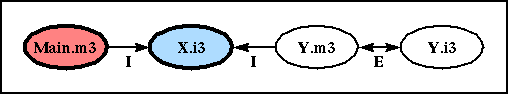
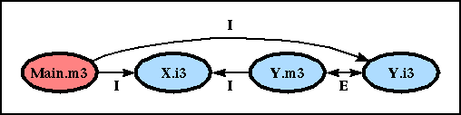
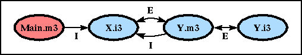
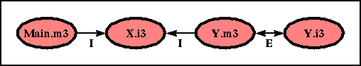

These examples were suggested by Umesh Maheshwari (umesh@note.lcs.mit.edu).
Our first example consists of a program built from two packages: a library package named LibPkg and a program package named ProgPkg.
The LibPkg package consists of three source files: "X.i3", "Y.i3", and "Y.m3".
INTERFACE X; INTERFACE Y; TYPE T <: ROOT; END Y. END X. MODULE Y; IMPORT X; REVEAL X.T = ROOT BRANDED OBJECT c: CHAR END; BEGIN END Y.
The m3makefile for package LibPkg is:
import(libm3) Interface(X) Module(Y) Library(LibPkg)
The ProgPkg package consists of a single source file, "Main.m3".
MODULE Main; IMPORT X; BEGIN END Main.
The m3makefile for package ProgPkg is:
override(LibPkg, "../..") import(libm3) import(LibPkg) implementation(Main) program(Prog)
The unit graph constructed by the linker when it builds the ProgPkg program looks like this:

In this and subsequent figures, the roots are colored red, the reachable non-roots are colored blue, and the edges are labeled "I" or "E" to denote that the edge is due to an IMPORT or EXPORTS relation, respectively. Hence, the colored nodes correspond to the units included in the final build.
Since the units "Y.m3" and "Y.i3" are not reachable from the single root "Main.m3", the linker does not include them in the build. Hence, the linker does not find a concrete revelation for the type "X.T". When we run m3build on the ProgPkg package, the compiler prints out the following error message:
-> linking Prog
opaque type never revealed: _tb81ca1e6
defined in X.i3
The problem can be avoided in a number of ways, as shown in the following three examples.
If we change "Main.m3" so that it imports "Y" as well as "X", the unit graph changes to look like this:

Now, both "Y.i3" and "Y.m3" are reachable from the root, so the linker finds a concrete revelation for "X.T", and the program builds successfully.
Starting from Example 1, we can instead export the interface "X" in the module "Y", like this:
MODULE Y EXPORTS X, Y; IMPORT X; REVEAL X.T = ROOT BRANDED OBJECT c: CHAR END; BEGIN END Y.
This adds a new EXPORTS edge to the unit graph:

Now, "Y.m3" has become reachable from the root "Main.m3" through "X.i3", so the linker again finds a concrete revelation for "X.T", and the program builds successfully.
Starting from the source files of Example 1, we can move all of the LibPkg sources into the ProgPkg package. The m3makefile for the ProgPkg then becomes:
import(libm3) interface(X) module(Y) implementation(Main) program(Prog)
This doesn't change the unit graph from Example 1, but it does makes all four of the sources roots:

Hence, "Y.m3" is once again seen by the linker, and the program builds successfully.